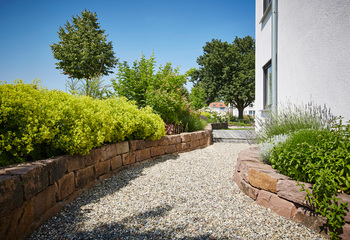

<<<<<<< HEAD
=======
>>>>>>> f0ae8ea852993a396491acff43e8ec29263c4e2e
<<<<<<< HEAD
Die Kunst das Leben zu genießen
Garten- und Landschaftsbau, Dachbegrünung
=======
Die Kunst das Leben zu genießen
Garten- und Landschaftsbau, Dachbegrünung
>>>>>>> f0ae8ea852993a396491acff43e8ec29263c4e2e

<<<<<<< HEAD
Von Anfang an stand die Planung, Erstellung und Pflege von Privatgärten im Mittelpunkt unserer Arbeit. Unser Ziel ist es, den Ansprüchen und individuellen Wünschen unserer Kunden im höchstem Maße zu entsprechen. Dabei vertrauen wir auf die Stärke unseres hochqualifizierten Teams von 20 Mitarbeitern, von denen jeder ein Spezialist in seinem Fachgebiet ist.
Allein für Planung und Entwurf von Gärten und komplexen Außenanlagen halten sich 4 Landschaftsarchitekten in unserem Betrieb für Sie bereit. Wir stellen höchste Anforderungen an uns selbst, wenn es um die Qualität unserer Arbeit geht. Die stets wachsende Zahl zufriedener Kunden bestätigt unsere Philosophie.
Unsere Leistungen
* Outdoorküchen
* Möbel
* Schwim- Zierteiche
* Dachbegrünung
* Beregnungsanlage
* Outdoorküchen
* Möbel
* Schwimm- und Zierteiche
* Wasserspiele und Skulpturen
* Dachbegrünung
* Beregnungsanlagen
>>>>>>> f0ae8ea852993a396491acff43e8ec29263c4e2e
 <<<<<<< HEAD
<<<<<<< HEAD